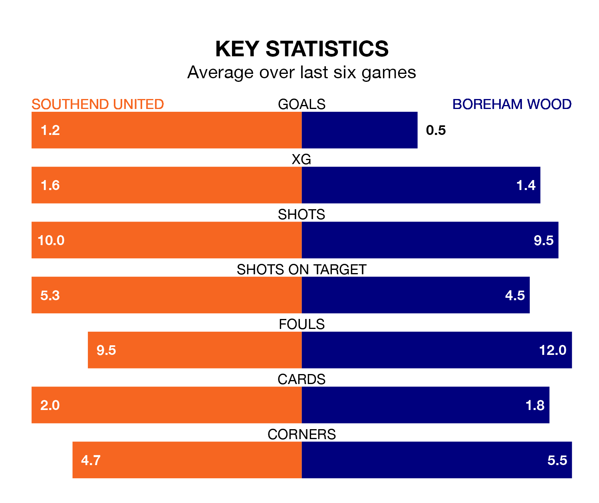

Southend United are heavy favourites to keep all three points at home in Monday's kick-off against Boreham Wood.
The Shrimpers, who sit seventh in the National League with 42 games played, are priced at 1.6 to seal victory at Roots Hall.
Sitting 14 places and 22 points behind them in the table, Boreham Wood are 4.5 to win with *Betting Company*, while the draw is at 3.7.
Southend are in mixed form in the National League, with two wins and four draws from their last six games.
With no wins and a draw over that period, Boreham Wood's form is much worse – they have taken one point from 18, compared to United's 10.
In the last 10 years, Southend and Boreham Wood have played each other on seven occasions. Southend won two of them, Boreham Wood three, and they drew twice.
On average, the Shrimpers scored 1.0 goal and the Wood 1.0 in those matches.
Their last meeting was on October 28, when they played out a 1-1 draw.
With 50 goals in 41 games so far this season, the Wood are scoring at below the league average rate with 1.2 goals per game. And they are conceding more than average, letting in 69 goals at a rate of 1.7 per game.
The Shrimpers, meanwhile, are average scorers, with 1.5 goals per game. They have conceded 1.0 goal per game.
Southend's last match was on Friday, a 1-1 draw against Ebbsfleet United, with Harry Cardwell getting the goal for the Shrimpers.
Boreham Wood lost 4-1 against Dagenham and Redbridge last time out, also on Friday, with Kabongo Tshimanga on the scoresheet.
Updated: 10:31 (UTC), 31/03/24